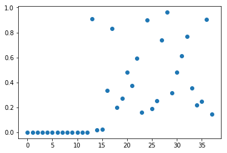

Automated Feature Selection
In our projects, we often deal with datasets containing many variables. Some of them may decrease the accuracy of models. Today, I am going to show you some automatic ways of selecting relevant features. Imagine that you got a dataset with hundreds of variables and you do not know if all of them are relevant in the predictive modelling problem.
Feature engineering is an essential parameter of a successful model as observed below:
The process of identifying or excluding not necessary variables is called feature selection and in most scenarios it is defined through an automated algorithm.
Why feature selection makes our approach more efficient: - It helps to avoid overfitting as less redundant data is present after feature selection. - It may increase prediction performance, as learning will concentrate only on meaningful data. - It reduces execution time and is memory-efficient as there is less data to process.
Univariate statistics
Univariate statistics is a simple method which is by looking at each feature individually and running a statistical test to see whether it is related to the target. This method is also known as analysis of variance (ANOVA)
We will use the Boston Housing Data as an example. Then, we create a new dataset that consists of the Boston Housing Data with an additional 25 completely random features.
import numpy as np
import pandas as pd
from sklearn.linear_model import LinearRegression
from sklearn.model_selection import train_test_split
from sklearn.datasets import load_boston
boston = load_boston()
df = pd.DataFrame(boston.data)
# label columns
df.columns = boston.feature_names
df['Price'] = boston.target
noise = pd.DataFrame(np.random.randint(1,100,size=(len(boston.data), 25)))
X = pd.concat([df.drop('Price', axis=1), noise], axis=1)
y = df['Price']
df.head(3)
| CRIM | ZN | INDUS | CHAS | NOX | RM | AGE | DIS | RAD | TAX | PTRATIO | B | LSTAT | Price | |
|---|---|---|---|---|---|---|---|---|---|---|---|---|---|---|
| 0 | 0.00632 | 18.0 | 2.31 | 0.0 | 0.538 | 6.575 | 65.2 | 4.0900 | 1.0 | 296.0 | 15.3 | 396.90 | 4.98 | 24.0 |
| 1 | 0.02731 | 0.0 | 7.07 | 0.0 | 0.469 | 6.421 | 78.9 | 4.9671 | 2.0 | 242.0 | 17.8 | 396.90 | 9.14 | 21.6 |
| 2 | 0.02729 | 0.0 | 7.07 | 0.0 | 0.469 | 7.185 | 61.1 | 4.9671 | 2.0 | 242.0 | 17.8 | 392.83 | 4.03 | 34.7 |
X_train, X_test, y_train, y_test = train_test_split(X, y, train_size = 0.5, test_size = 0.5, random_state=42)
Univariate feature selection works by selecting the best features based on univariate statistical tests. It can be seen as a preprocessing step to an estimator. Scikit-learn exposes feature selection routines as objects that implement the transform method:
- SelectKBest removes all but the highest scoring features.
- SelectPercentile removes all but a user-specified highest scoring percentage of features.
- Using common univariate statistical tests for each feature: false positive rate SelectFpr, false discovery rate SelectFdr, or family wise error SelectFwe.
- GenericUnivariateSelect allows to perform univariate feature selection with a configurable strategy. This allows to select the best univariate selection strategy with hyper-parameter search estimator.
We have to define a threshold on the p-value of the statistical test to decide how many features to keep. There are several strategies implemented in scikit-learn, a straight-forward one being SelectPercentile, which selects a percentile of the original features.
from sklearn.feature_selection import SelectPercentile
# use f_classif (the default) and SelectPercentile to select percentile = 15:
select = SelectPercentile(percentile=15)
select.fit(X_train, y_train)
# # transform training set:
X_train_selected = select.transform(X_train)
print(X_train.shape)
print(X_train_selected.shape)
select.get_support()
(253, 38)
(253, 6)
array([ True, False, False, False, True, True, True, False, False,
False, False, True, True, False, False, False, False, False,
False, False, False, False, False, False, False, False, False,
False, False, False, False, False, False, False, False, False,
False, False])
These objects take as input a scoring function that returns univariate scores and p-values (or only scores for SelectKBest and SelectPercentile):
- For regression: f_regression, mutual_info_regression
- For classification: chi2, f_classif, mutual_info_classif
The methods based on F-test estimate the degree of linear dependency between two random variables. On the other hand, mutual information methods can capture any kind of statistical dependency, but being nonparametric, they require more samples for accurate estimation.
from sklearn.feature_selection import f_classif, f_regression, chi2
import matplotlib.pyplot as plt
%matplotlib inline
F, p = f_regression(X_train, y_train)
plt.figure()
plt.plot(p, 'o')
[<matplotlib.lines.Line2D at 0x1bf8bbc7278>]

Going back to the SelectPercentile transformer, we can obtain the features that are selected using the get_support method:
mask = select.get_support()
print(mask)
# visualize the mask. black is True, white is False
plt.matshow(mask.reshape(1, -1), cmap='gray_r')
[ True False False False True True True False False False False True
True False False False False False False False False False False False
False False False False False False False False False False False False
False False]
<matplotlib.image.AxesImage at 0x1bf8bc65240>

It's important to learn the feature selection only on the training set!
from sklearn.linear_model import LinearRegression
# transform test data:
X_test_selected = select.transform(X_test)
ln = LinearRegression()
ln.fit(X_train, y_train)
print(f"Score with all features: {ln.score(X_test, y_test)}")
ln.fit(X_train_selected, y_train)
print(f"Score with only selected features: {ln.score(X_test_selected, y_test)}")
Score with all features: 0.6562323137037431
Score with only selected features: 0.6056841906269855
Model-based Feature Selection
Next, we learn how to select features through a model-based feature selection. This method uses machine learning to model the data, studying the usefulness of a feature according to its relative importance to the predictability of the target variable. In order to do that, the model provides some way to rank the features by importance.
Moreover, the obvious example is linear regression, which works by applying a coefficient multiplier to each of the features. Obviously, the higher the coefficient, the more valuable the feature.
To present model-based selection in scikit-learn, you can use "SelectFromModel" in conjunction with different models. Any of these models can be made into a transformer that does feature selection by wrapping it with the SelectFromModel class:
from sklearn.feature_selection import SelectFromModel
from sklearn.ensemble import RandomForestRegressor
select = SelectFromModel(RandomForestRegressor(n_estimators=100, random_state=42), max_features=15)
select.fit(X_train, y_train)
X_train_rf = select.transform(X_train)
print(X_train.shape)
print(X_train_rf.shape)
(253, 38)
(253, 4)
mask = select.get_support()
# visualize the mask. black is True, white is False
plt.matshow(mask.reshape(1, -1), cmap='gray_r')
<matplotlib.image.AxesImage at 0x1bf8c26b668>

X_test_rf = select.transform(X_test)
LinearRegression().fit(X_train_rf, y_train).score(X_test_rf, y_test)
0.6080482109223608
Recursive Feature Elimination
Recursive Feature Elimination is similar to the methods above which selects a important features that are deemed most important by the model. In simple term, it is a backward selection of the variables. Literally, this technique begins by building a model on the entire set of variables and computing an importance score for each variable. The least important variables are removed, the model is re-built, and importance scores are computed again.
from sklearn.feature_selection import RFE
select = RFE(RandomForestRegressor(n_estimators=100, random_state=42), n_features_to_select=15)
select.fit(X_train, y_train)
# visualize the selected features:
mask = select.get_support()
plt.matshow(mask.reshape(1, -1), cmap='gray_r')
<matplotlib.image.AxesImage at 0x1bf8c2ce3c8>

X_train_rfe = select.transform(X_train)
X_test_rfe = select.transform(X_test)
LinearRegression().fit(X_train_rfe, y_train).score(X_test_rfe, y_test)
0.6615123564812166
select.score(X_test, y_test)
0.797557145968709
The advantage of this approach is that it will not remove variables which were deemed insignificant at the beginning of the process, but become more and more significant as lesser features are removed. For datasets with many variables relatively strongly correlated with one another and relatively weakly correlated with the target variable, this approach may result in slightly different feature choices from those made by model-based selection. The disadvantage is that since you have to train the model many times, this approach is multiplicatively slower than the one-and-done.